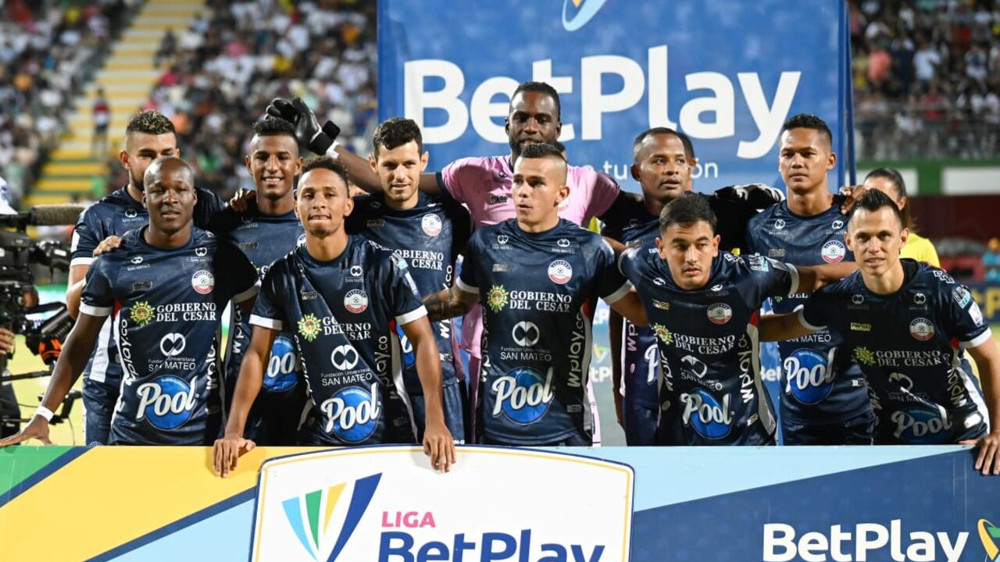

Valledupar FC es un club de fútbol colombiano que representa con orgullo a la ciudad de Valledupar. El equipo ha participado en diferentes competiciones del fútbol colombiano y cuenta con una gran afición que apoya al equipo en cada partido.